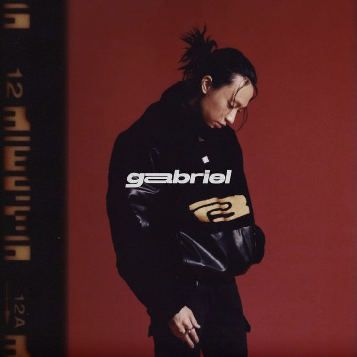
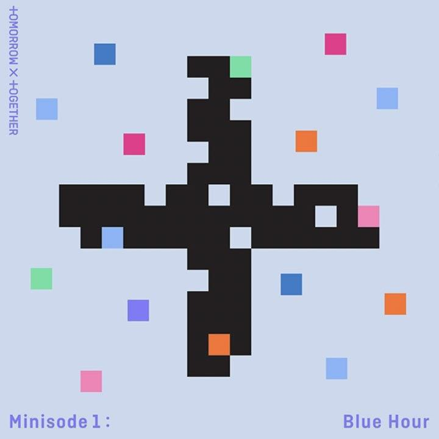
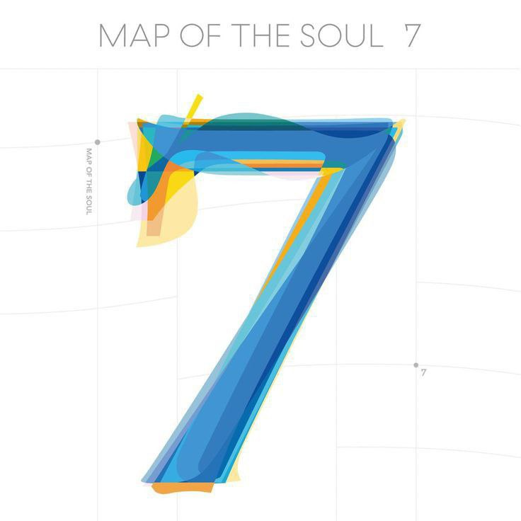
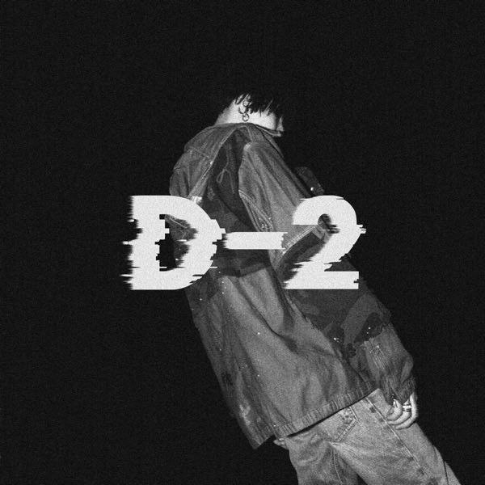
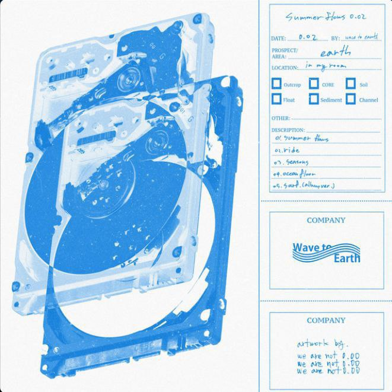

| Home | About Me | Education Journey | Sports | Enthusiasm | Beloved Pets | My Skills |
|---|
Living in our modern world today, being close to nature is something that goes undervalued. Luckily, my parents have influenced my love of nature, by involving me to grow several trees supplying fruit, beauty, and to rake several leaves in the fall. Today, our backyard is a home to running squirrels, nesting birds, and creepy crawlies such as snails, snakes, and spiders. All of the nature that is supplied by our house, is the cause that has created a strong sense to wonder about the life around us.
Including questions like, Why is the sky blue? What makes invasive species so dangerous? I wanted to learn about animals, life sciences, and eventually how to preserve the environment. The proximity of nature in my life has encouraged me to learn and teach others the impacts between humans and the Earth.
Oftentimes, people will ask you what your favorite part of nature is. Some people say the vast seas, mountains, or even the wind. But I always say the sky. I love the sky because it is beautiful, vast, and always available; it is a continuous portrait of color and movement manifested by a Creator who knew we needed something to visually experience as we gaze up to Him. It is a snapshot of heaven, of creation, and we can never get away from it. Just think about it--the sky is constant in a world that most certainly is not. It doesn’t disappear like the flowers in the spring or trees in the forest; it merely changes.
I love looking at the night sky because it’s often very quiet when I do. I think about the shining little freckles that let me know that I am small and that God is very big. I like thinking about how He is watching me, knowing me, taking care of me. He does all of this perfectly.
There's a time in our lives that we just can't express our feelings to ourselves and to everyone. Whether we are sad, happy, or angry. I have that time too. When I got broken, I can't speak. I cried and cried. Until I see my guitar in the corner of my room. I get it and start strumming it. I sang my feelings out. It helped me to be calm and to move on. Until then, I used music as a language when I can't express my feelings.
|  |  | |
|---|---|---|
|  |  |  |